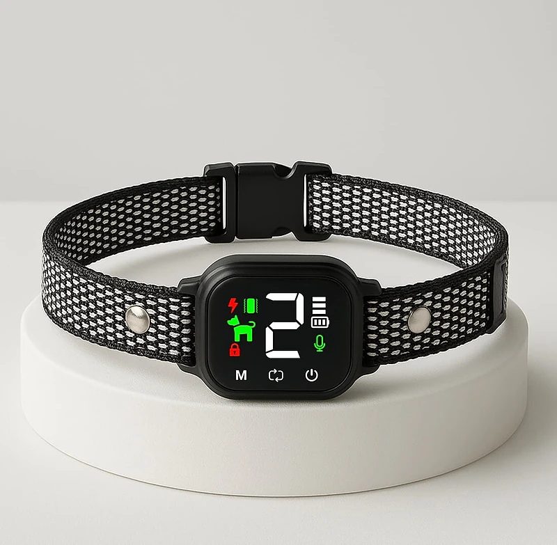
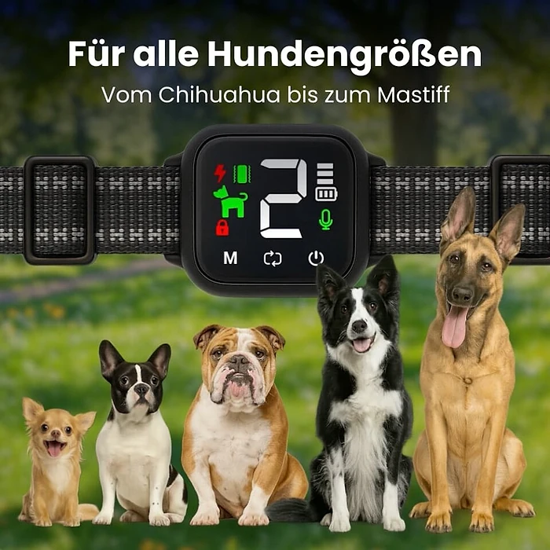

Was ist NooBark und wie funktioniert es?
NooBark ist ein Anti-Bell-Hundehalsband, das laut der offiziellen Website Hundehaltern helfen soll, unerwünschtes Bellen zu reduzieren und das Verhalten ihres Hundes zu trainieren. Das Gerät besteht aus einem verstellbaren Halsband und einer kleinen Steuereinheit mit LED-Anzeige, die am Hals des Hundes sitzt.
Das Prinzip beschreibt der Hersteller so: Ein eingebauter Geräuschsensor mit sogenannter Wellenformerkennung soll das Bellen des eigenen Hundes erkennen und Hintergrundgeräusche ignorieren. Bellt der Hund, reagiert das Halsband mit einem Signalton, einer Vibration oder einer statischen Stimulation, je nachdem, welcher Modus eingestellt ist. Der Hund soll so lernen, die Rückmeldung mit dem Bellen zu verbinden und seltener zu bellen.
Laut Website gibt es vier Trainingsmodi (Ton, Vibration, Schock und Kombination) und acht Empfindlichkeitsstufen. Das LED-Display zeigt Akkustand, Empfindlichkeit und Korrekturmodus an, die Bedienung erfolgt über Tasten auf dem Gerät. Der Akku soll nach einer Ladezeit von etwa zwei Stunden bis zu 15 Tage halten, und das Gerät wird als wasserdicht nach IP67 beschrieben.
Das Halsband ist laut Hersteller leicht, verstellbar und für Hunde aller Größen gedacht, „vom Chihuahua bis zum Mastiff“, wie es auf einem Produktbild heißt. Die Website stellt außerdem einen Hundetrainer namens Jordan Hayes vor, der NooBark entwickelt haben soll. Belege für dessen Zertifizierung nennt die Seite nicht.
Wichtig für Käufer in Deutschland, Österreich und der Schweiz: Der Einsatz von Geräten, die Hunden über direkte elektrische Reize Schmerzen zufügen, ist in allen drei Ländern durch das Tierschutzrecht eingeschränkt beziehungsweise verboten (in Deutschland § 3 Nr. 11 Tierschutzgesetz, in Österreich § 5 Tierschutzgesetz, in der Schweiz Art. 76 Tierschutzverordnung). Wer NooBark hier nutzt, sollte sich deshalb auf den Ton- und den Vibrationsmodus beschränken. Ein Anti-Bell-Halsband ersetzt zudem kein Training: Bellt ein Hund aus Langeweile, Angst oder Stress, muss die Ursache angegangen werden, wie auch eine Hundetrainerin in den Bewertungen auf der Website betont.
NooBark Funktionen
Laut der offiziellen Website bietet NooBark:
Intelligente Bellerkennung: ein Geräuschsensor soll echtes Bellen von Hintergrundgeräuschen unterscheiden.
Vier Trainingsmodi: Ton, Vibration, Schock und Kombination.
Acht Empfindlichkeitsstufen: zur Anpassung an das Temperament des Hundes.
LED-Display: Anzeige von Akkustand, Empfindlichkeit und Modus.
Lange Akkulaufzeit: bis zu 15 Tage nach etwa zwei Stunden Ladezeit.
Wasserdicht nach IP67 und ein verstellbares Halsband für kleine und große Hunde.
Auf den Produktbildern ist ein schwarzes Halsband mit hellem, gewebtem Muster, Klickverschluss und einer quadratischen Steuereinheit zu sehen. Das Display zeigt eine große Ziffer für die Stufe sowie Symbole für Modus, Akku, Mikrofon und Tastensperre; darunter liegen die Tasten „M“, Moduswechsel und Ein/Aus.
In einer Vergleichstabelle stellt der Hersteller NooBark „anderen“ Anti-Bell-Halsbändern gegenüber, mit den Punkten Bellerkennung, einstellbare Empfindlichkeit, LED-Display, Passform, Akkulaufzeit, Wasserdichtigkeit und „sichere und humane Korrektur“. Welche Produkte verglichen werden, nennt die Seite nicht. Angaben wie „reduziert Bellen um bis zu 90 %“ oder „100 % Schulungserfolg“ werden nicht belegt. Technische Details wie Gewicht, Halsumfang in Zentimetern, Stärke der Stimulation oder Lautstärke des Signaltons fehlen in der deutschen Beschreibung.
NooBark Anwendung
Die Website beschreibt drei Schritte. Zum Einschalten halten Sie die Ein/Aus-Taste zwei Sekunden lang gedrückt; mit langem Druck auf die M-Taste wird das Halsband entsperrt. Danach stellen Sie Modus und Empfindlichkeit ein, legen das Halsband bequem um den Hals Ihres Hundes und beginnen mit dem Training.
Laut häufig gestellten Fragen liegt es meist an einer zu niedrigen Empfindlichkeit, an Kontaktpunkten ohne Hautkontakt oder an einem leeren Akku, wenn das Halsband beim Bellen nicht reagiert. Andere Hunde in der Nähe können das Gerät trotz Filter auslösen; dann soll die Empfindlichkeit feiner eingestellt werden.
Der Hersteller schreibt ausdrücklich, dass das Halsband nicht länger als 12 Stunden am Stück getragen werden soll und die Haut darunter regelmäßig kontrolliert werden muss. Eine Trainerin rät in den Bewertungen außerdem, das Gerät nicht den ganzen Tag eingeschaltet zu lassen und Pausen einzulegen.
Allgemeine Hinweise: Beginnen Sie mit dem Signalton und der niedrigsten Stufe und beobachten Sie, wie Ihr Hund reagiert. Verwenden Sie in Deutschland, Österreich und der Schweiz keinen Schockmodus. Nutzen Sie das Halsband nur unter Aufsicht, nie bei ängstlichen oder kranken Hunden ohne Rücksprache mit Tierarzt oder Trainer, und belohnen Sie ruhiges Verhalten, damit Ihr Hund nicht nur lernt, was er nicht tun soll.
NooBark – Rückerstattung
Laut der offiziellen Website gilt eine 30-Tage-Geld-zurück-Garantie. Nach der Rückgaberichtlinie können Sie Produkte innerhalb von 30 Tagen nach Erhalt der Bestellung gegen Rückerstattung oder Umtausch zurücksenden, wenn sie beschädigt oder defekt sind, wenn Sie den falschen Artikel erhalten haben oder wenn Sie es sich anders überlegt haben.
Für eine Rückgabe wegen Meinungsänderung muss der Artikel unbenutzt, unbeschädigt und in der Originalverpackung sein, mit allem Zubehör. Bei defekten oder beschädigten Artikeln bietet der Verkäufer Ersatz oder volle Rückerstattung an und bittet um Fotos des Schadens.
Rücksendungen müssen vorab genehmigt werden und dürfen nur an die Adresse geschickt werden, die mit der Rücksendeautorisierung (RMA) mitgeteilt wird. Pakete ohne Genehmigung oder an die Firmenadresse werden laut Richtlinie nicht bearbeitet. Die Kosten der Rücksendung trägt der Kunde, die ursprünglichen Versandkosten werden nicht erstattet.
Für Verbraucher in der EU gilt zusätzlich das gesetzliche Widerrufsrecht von 14 Tagen, unabhängig von der freiwilligen Garantie. Da benutzte Halsbänder von der Rückgabe wegen Meinungsänderung ausgeschlossen sein können, lohnt es sich, Verpackung und Zubehör aufzubewahren und das Gerät zunächst nur kurz zu testen. Kontakt, Bestellverfolgung und die vollständigen Bedingungen finden Sie im Fußbereich der offiziellen Website. Bewahren Sie außerdem die Bestellbestätigung und eine schriftliche Rücksendeautorisierung auf, bis die Erstattung auf Ihrem Konto eingegangen ist.
NooBark Kundenbewertungen
-
Johannes M.Verifizierter Kauf
„Mein Hund hat früher bei jedem kleinen Geräusch gebellt und uns (und unsere Nachbarn) damit verrückt gemacht. Ich habe NooBark ausprobiert, und innerhalb weniger Tage war es wie Tag und Nacht. Er ist ruhiger geworden, und wir sind es auch.“
-
Irmgard S.Verifizierter Kauf
„Wir trainieren unseren Border Collie mit diesem Halsband und es hat sich bisher bewährt. Wir verwenden es nur zum Training und für Spaziergänge.“
-
Birgit L.Verifizierter Kauf
„Wir verwenden es für das Training NUR mit dem Vibrationsmodus. Funktioniert gut. Tolles Gerät, schneller Service.“
NooBark – Wo kaufen?
NooBark wird über die offizielle Bestellseite get-noobark.com verkauft, die eine eigene deutsche Version hat. Dort finden Sie Eigenschaften, Funktionsweise, Bewertungen, häufig gestellte Fragen und Kontakt, und Sie wählen direkt die gewünschte Menge.
Anti-Bell-Halsbänder mit sehr ähnlichem Aussehen werden von vielen Anbietern verkauft, oft mit identischer Steuereinheit und unter wechselnden Namen. Bei Angeboten auf Marktplätzen ist nicht sicher, ob es sich um dasselbe Produkt handelt, und die 30-Tage-Garantie des Verkäufers gilt dort in der Regel nicht.
Die Bestellseite arbeitet mit einem Countdown, Hinweisen auf knappe Lagerbestände und Formulierungen wie „Deutschlands #1“. Lassen Sie sich davon nicht drängen. Prüfen Sie vor dem Abschluss die Bestellübersicht, die Menge, das Lieferland und die Rückgabebedingungen, und achten Sie darauf, dass Sie sich wirklich auf get-noobark.com befinden. Verkäufer ist laut Impressum die Interapeak LLC mit Sitz in Delaware (USA); Lieferung und Rücksendung laufen also über einen Händler außerhalb der EU, was bei Fragen zu Rückgabe und Gewährleistung wichtig sein kann. Speichern Sie deshalb die Bestellbestätigung mit Bestellnummer, bis das Paket angekommen ist.
Um sicherzugehen, dass Sie das Originalprodukt erhalten, besuchen die meisten Nutzer die offizielle Website.
Ist NooBark Betrug?
Nach den verfügbaren Informationen gibt es keinen Hinweis darauf, dass NooBark Betrug ist. Das Halsband wird über eine eigene Bestellseite mit deutscher Version, Funktionsbeschreibung, Anleitung, Kundenbewertungen, häufig gestellten Fragen, Rückgaberichtlinie, allgemeinen Geschäftsbedingungen und Impressum verkauft.
Positiv sind die 30-Tage-Geld-zurück-Garantie, die klaren Hinweise zur Tragedauer und zur Hautkontrolle in den häufig gestellten Fragen sowie die Möglichkeit, nur mit Ton oder Vibration zu arbeiten.
Es gibt aber Punkte, die Aufmerksamkeit verdienen. Aussagen wie „100 % Schulungserfolg“, „reduziert Bellen um bis zu 90 %“ oder „bestes Anti-Bell-Halsband von 2026“ werden nicht belegt, die Logos bekannter Medien auf der Seite verweisen auf keine konkreten Artikel, und die Zertifizierung des genannten Trainers lässt sich nicht überprüfen. Der Verkäufer sitzt in den USA, Rücksendungen brauchen eine vorherige Genehmigung und gehen auf Kosten des Kunden.
Der wichtigste Punkt ist rechtlicher Natur: Der Schockmodus darf in Deutschland, Österreich und der Schweiz nach dem Tierschutzrecht nicht eingesetzt werden. Das Gerät ist dadurch nicht unseriös, aber Sie sollten es dort nur mit Ton und Vibration verwenden.
Wer realistische Erwartungen hat, das Halsband als Ergänzung zum Training versteht und direkt auf der offiziellen Website bestellt, geht nach heutigem Stand kein besonderes Risiko ein. Bei starkem Angst- oder Aggressionsbellen bleibt eine Hundetrainerin oder ein Tierarzt die bessere Anlaufstelle.
Wer Produktdetails überprüfen oder die aktuelle Verfügbarkeit prüfen möchte, ist auf der offiziellen NooBark-Website am sichersten aufgehoben.
